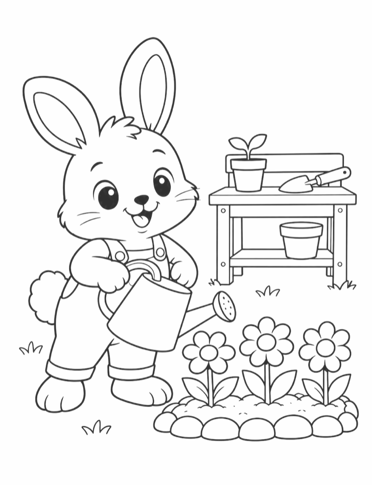
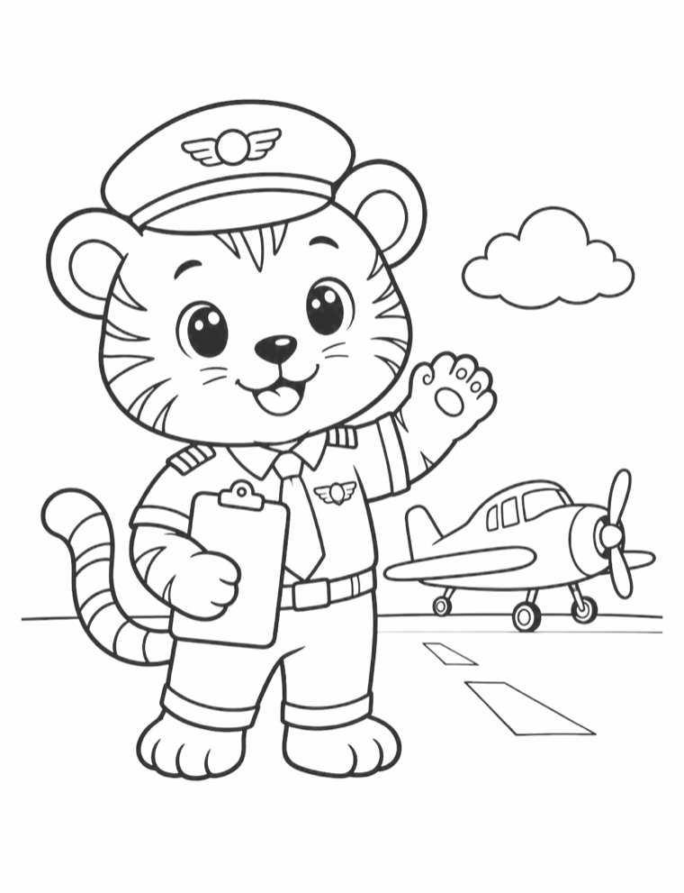
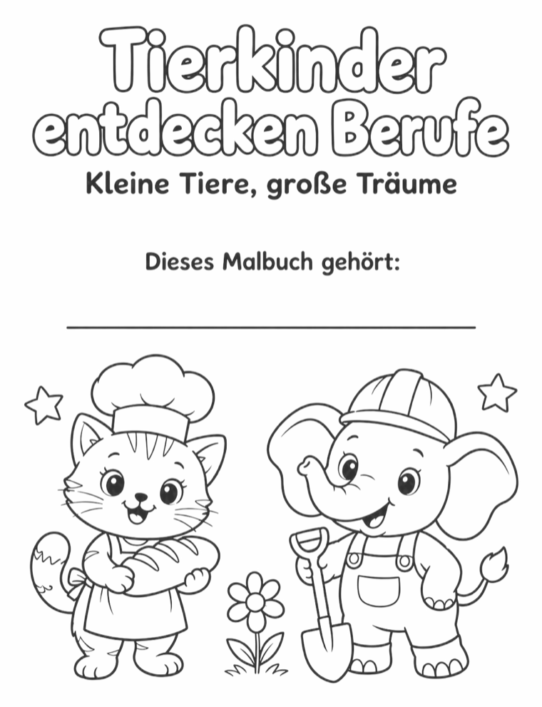

Malbuch ab 4 Jahren
Tierkinder entdecken Berufe
Kleine Tiere, große Träume
Vierzig Ausmalbilder von Tierkindern in ihrem Traumberuf: der Kater als Bäcker, der Elefant auf der Baustelle, der Tiger im Cockpit. Große Flächen, kräftige Linien — gemacht für Hände, die das Ausmalen gerade erst lernen.
- 40 Ausmalbilder
- Ab 4 Jahren
- 21,6 × 27,9 cm
- Einseitig bedruckt

Das Buch
Vier Dinge, die beim Ausmalen den Unterschied machen
Ein Malbuch für Vierjährige muss anders gebaut sein als eines für Zehnjährige. Darauf ist dieses hier ausgelegt.
Große Flächen
Keine Schraffuren, keine Mini-Details. Die Formen sind so groß, dass ein Stift auch dann im Feld bleibt, wenn die Hand noch wackelt.
Einseitig bedruckt
Jedes Motiv hat seine eigene Seite, die Rückseite bleibt leer. Drückt ein Filzstift durch, ist kein zweites Bild ruiniert.
Großes Format
21,6 × 27,9 cm — deutlich größer als ein Schulheft. Mehr Platz für Arme, die beim Malen gern ausholen.
Vierzig Berufe
Vom Bäcker über die Feuerwehr bis zur Raumfahrt. Jedes Bild zeigt einen Beruf mit seinem Werkzeug — und gibt beim Ausmalen etwas zu erzählen.
Blick ins Buch
Sechs von vierzig Seiten
So sehen die Bilder aus, bevor die Stifte kommen.






Für wen
Wann ein Malbuch gerade richtig ist
Ausmalen beschäftigt Kinder lange, ohne Bildschirm und ohne Anleitung. Besonders gut passt dieses Buch hier:
- Kindergeburtstag
- Mitbringsel
- Kita und Vorschule
- Lange Autofahrt
- Regennachmittag
- Wartezimmer
- Ostern und Nikolaus
Das Thema Berufe bringt beim Ausmalen Gespräche in Gang: Was macht ein Bauarbeiter eigentlich den ganzen Tag? Was möchtest du einmal werden? Genau diese Frage steht auch auf der Rückseite des Buches.

Über mich
Sebastian Mentzel
[Hier dein Text: Wer bist du, wie kam es zum ersten Malbuch, was magst du an der Arbeit daran? Zwei kurze Absätze reichen völlig. Eltern kaufen eher, wenn hinter dem Buch eine Person steht statt einer Marke — konkret werden schlägt Lebenslauf.]
[Zweiter Absatz: Woher die Tierfiguren stammen, wer Probe malt, was als Nächstes kommt.]
Häufige Fragen
Kurz beantwortet
Ab welchem Alter passt das Buch?
Drücken Filzstifte durch?
Welche Berufe kommen vor?
Wo kann ich das Buch kaufen?
Gibt es weitere Malbücher?
Kann ich das Buch für meine Kita in größerer Stückzahl bestellen?
Kontakt
Fragen, Rezensionsexemplare, Kita-Anfragen
Schreib einfach eine Mail.
post@kreativdschungel.de
[Richtige Adresse eintragen — hier und unten im Impressum.]